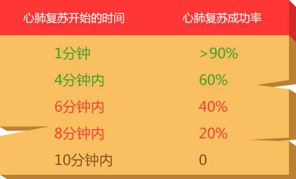

心脏复苏：(CPR)是一种救助心跳停止病患的急救措施，通过人工保持脑功能直到自然呼吸和血液循环恢复。如果轻拍病人肩膀并大声呼喊，同时以食指和中指触摸其颈动脉搏动，但二者均无迹象，就表明该病人出现了心搏骤停，这个时候应立即实施初步急救和复苏， 并且时间越早，病人存活的几率越大。心肺复苏的关键是“胸外按压”，有心理顾忌的朋友可以不进行人工呼吸，但胸外按压一定不能停。
可以简单记忆为：叫叫鸭（压）——呼叫患者、呼救120、胸外按压
如果发现有人突然倒地昏迷，首先在确认现场安全后，应轻拍其肩膀，并大声呼喊其姓名或询问状况。如果他已丧失意识，应大声呼救引起周围人注意，并要求周围救援者或他人拨打急救电话120，同时，对其进行心肺复苏。
1.将伤者仰卧于坚实的平面上，将右手食指与中指沿着肋骨边缘滑至胸骨下端的剑突位置，男性可以平双侧乳头连线中点处；
2.将左手掌根部贴紧右手食指，定位按压位置；
3.将右手掌根部放于左手的手背上方，双手掌根重叠，十指相扣。下方的手指翘起，不能触及胸壁；
4.按压时，身体前倾，手臂伸直，双臂与胸骨水平垂直，用上身的力量将患者胸骨用力向下按压。
胸外按压的意义高于其他操作，通过人为的按压可以维持血液循环，保证脑、心等重要脏器的血液供应！！！
将伤者姿势摆正为仰卧位置，救援者应位于伤者右侧，以方便施救。救援者，先用纸巾等清理伤者口腔分泌物，保证气道通畅；将左手掌根轻压于伤者额头，并用右手食指与中指将伤者的下巴轻轻抬起。查看伤者是否还有呼吸或呼吸是否顺畅。
气道打开后，用左手捏住伤者鼻子，同时右手依然保持抬下巴动作。
救援者吸一口气，并将嘴包住伤者口部，吹入气体（约500-600毫升），吹入气体后，放开捏鼻的手，再重复吹一次气体。
进行胸外按压与人工呼吸操作的比率为30:2(儿童可以选择15：2)，进行30次胸外按压，2次人工呼吸为1个循环周期，5个循环（约2分钟）后可以检查和评估心肺复苏效果。如无效应反复进行胸外按压与人工呼吸操作（有心理顾忌者可不做这项操作），直到急救车和医务人员到达现场。